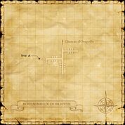
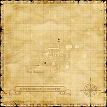
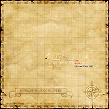

Description
Bostaunieux Oubliette is a dungeon in Ronfaure.
Map

Involved in Quests / Missions
| Quest / Mission | Type | Starter | Location |
|---|---|---|---|
| Souls in Shadow | Weapon Skill | Novalmauge | Bostaunieux Oubliette (G-8) |
| The Holy Crest | Job: Dragoon | Arminibit | Port San d'Oria (I-9) |
| The Rumor | Scroll | Novalmauge | Bostaunieux Oubliette (G-8) |
| The Walls of Your Mind | Weapon Skill | Oggbi | Port Bastok (E-6) |
| Trouble at the Sluice | General | Belgidiveau | Northern San d'Oria (G-8) |
NPCs
| Name | Location | Type |
|---|---|---|
| Chumia | H-6 | — |
| Couchatorage | E-8 | — |
| Jurgenclaus | G-8 | — |
| Novalmauge | G-8 | — |
Notorious Monsters
| Name | Level | Drops | Steal | Family | Spawns | Notes |
|---|---|---|---|---|---|---|
| Arioch | — | Arioch Fang Bat Fang Fiend Blood | — |  Giant BatsImage source Giant BatsImage source | — | A, H |
| Bloodsucker (NM) | 71 | Bloodbead Ring | — |  LeechesImage source LeechesImage source | — | A, L, H |
| Drexerion the Condemned | 72-73 | Flagellant's Crossbow Shadow Mask | — |  ShadowsImage source ShadowsImage source | — | A, L, H, HP |
| Manes | 72 | Taffeta Cloth | — |  GhostsImage source GhostsImage source | — | A, H, HP |
| Phanduron the Condemned | 72-73 | Ascalon Shadow Mask | — | ShadowsImage source | — | A, L, H, HP |
| Sewer Syrup | 64-65 | Jelly Ring Slime Oil | — |  SlimesImage source SlimesImage source | — | A, H |
| Shii | 70 | Sukesada | — |  HoundsImage source HoundsImage source | — | A, L, H, HP |
Regular Monsters

Event Monsters
| Name | Level | Drops | Steal | Family | Spawns | Notes |
|---|---|---|---|---|---|---|
| Bodach | — | — | — |  SkeletonsImage source SkeletonsImage source | 1 | Spawned Mission: The Walls of Your Mind; A, H, HP |
Maps


References
External references describe their own server or retail rules. Documented Zenith changes take precedence.
Map credits: Map 1 — HorizonXI Wiki · Map 2 — HorizonXI Wiki · Map 3 — HorizonXI Wiki. Original game maps © SQUARE ENIX; redrawn maps retain the credited authorship and license.


Additional level-75 reference


Acquisition




|
This prison, accessed from the basement of the Chateau d'Oraguille, is not currently in use by the Kingdom of San d'Oria, although a few guards are still kept to patrol the halls. The deeper recesses of the oubliette (a dungeon with an opening only on top) is accessible only through a guarded trap door. The prison is dangerous to even the most worthy of adventurers.
|
Connecting Areas
- Chateau d'Oraguille at (H-6)
- West Ronfaure at (E-10)
- Escapes to: West Ronfaure (E-8)
Involved in Quests/Missions
| Quest | Type | NPC | Pos. | Fame | Reward | Available? |
| The Rumor | Scroll | Novalmauge | G-8 | 3 | Drain scroll | Check |
| Souls in Shadow | WS | Novalmauge | G-8 | --- | Spiral Hell unlocked | Check |
| Mission | Country | Starter | Location |
| San d'Oria Mission 7-1: Prestige of the Papsque | San d'Oria | San d'Orian Gate Guard | San d'Oria |
Fishing
|
NPCs Found Here
|
Notorious Monsters Found Here
|
Name |
Level |
Drops |
Steal |
Family |
Spawns |
Notes | |||||||
| Arioch | Unknown | Giant Bat | 1 | A, H | |||||||||
| Bloodsucker | 71 | Leech | 1 | A, L, H | |||||||||
| Bodach | Unknown | Skeleton | 1 | A, H, HP | |||||||||
| Drexerion the Condemned | 72 - 73 | Shadow | 1 | A, L, H, HP | |||||||||
| Manes | Unknown | Ghost | 1 | A, H, HP | |||||||||
| Phanduron the Condemned | 72 - 73 | Shadow | 1 | A, L, H, HP | |||||||||
| Sewer Syrup | 64 - 65 | Slime | 1 | A, H | |||||||||
| Shii | 70 | Hound | 1 | A, L, H, HP | |||||||||
|
HP = Detects Low HP; M = Detects Magic; Sc = Follows by Scent; T(S) = True-sight; T(H) = True-hearing JA = Detects job abilities; WS = Detects weaponskills; Z(D) = Asleep in Daytime; Z(N) = Asleep at Nighttime | |||||||||||||
Mobs Found Here
|
Name |
Level |
Drops |
Steal |
Family |
Spawns |
Notes | |||||||
Acid Grease
|
52 - 54 | Slime | 1 | A, H, Sc | |||||||||
Bloodsucker
|
52 - 58 | Leech | 1 | A, H, Sc | |||||||||
| Bloodsucker | 65 - 68 | Leech | 43 | A, L, H, Sc | |||||||||
| Dark Aspic | 52 - 54 | Slime | 16 | A, H, Sc | |||||||||
| Funnel Bats | 52 - 55 | Bat Trio | 19 | A, L, H | |||||||||
| Garm | 64 - 66 | Hound | 19 Respawns:16 minutes |
A, H, HP | |||||||||
| Gespenst | 68 - 70 | Ghost | 9 Respawn:16 minutes |
A, H, HP | |||||||||
| Haunt | 60 - 63 | Ghost | 13 Respawn:16 minutes |
A, H, HP | |||||||||
| Hecatomb Hound | 56 - 59 | Hound | 12 Respawns:16 minutes |
A, H, HP | |||||||||
| Mousse | 58 - 62 | Slime | 13 Respawns:16 minutes |
A, H | |||||||||
Mousse
|
60-68 | Slime | 1 | A, H | |||||||||
| Werebat | 55 - 59 | Giant Bat | 48 | A, H | |||||||||
|
HP = Detects Low HP; M = Detects Magic; Sc = Follows by Scent; T(S) = True-sight; T(H) = True-hearing JA = Detects job abilities; WS = Detects weaponskills; Z(D) = Asleep in Daytime; Z(N) = Asleep at Nighttime | |||||||||||||
Adapted from Eden Wiki: Bostaunieux Oubliette · Contributors and history · CC BY-SA 4.0. Revision 45410. Layout, links and optional background text adapted for Zenith.